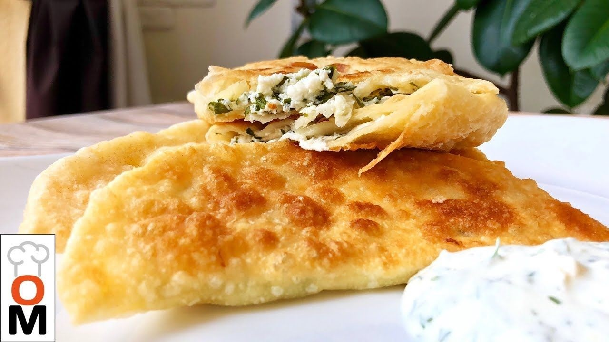

Классические чебуреки
Самый популярный

Ингредиенты:
- Мука — 500 г
- Вода — 250 мл
- Яйцо — 1 шт
- Фарш говяжий — 500 г
- Лук репчатый — 2 шт
- Соль, перец, зелень — по вкусу
- Масло для жарки — 300 мл
Приготовление:
- Замесить тесто из муки, воды, яйца и щепотки соли. Дать отдохнуть 30 мин.
- Для начинки смешать фарш с мелко нарезанным луком, добавить специи.
- Раскатать тесто, вырезать кружки. На каждый положить начинку, защипать края.
- Жарить в большом количестве масла до золотистой корочки.
- Выложить на бумажные полотенца, чтобы убрать лишний жир.